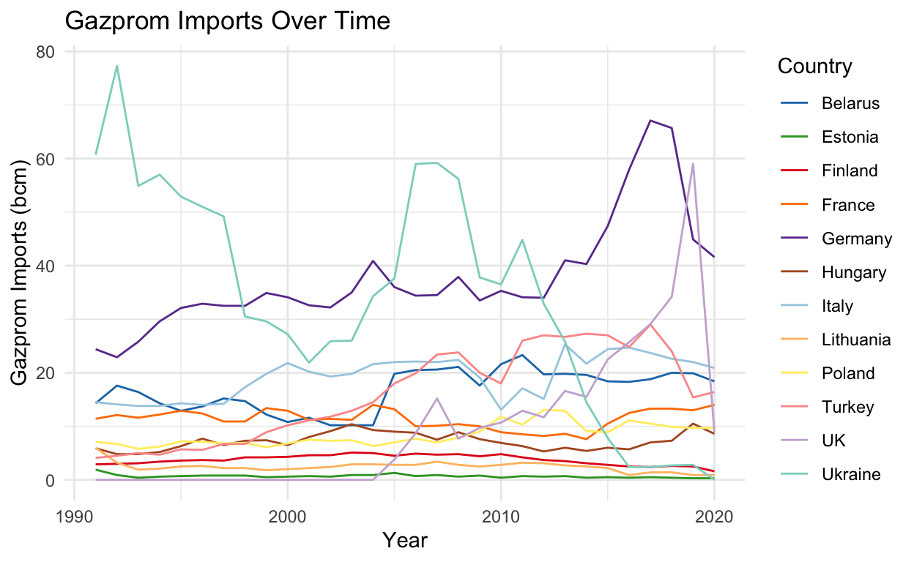
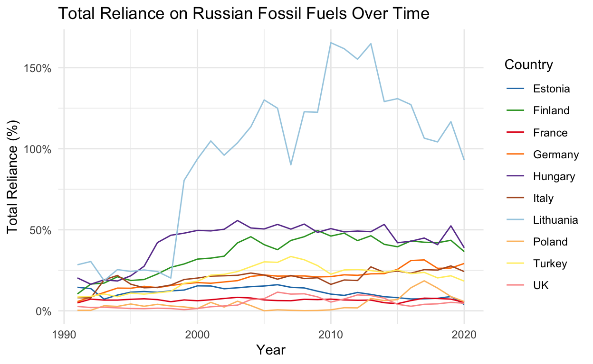
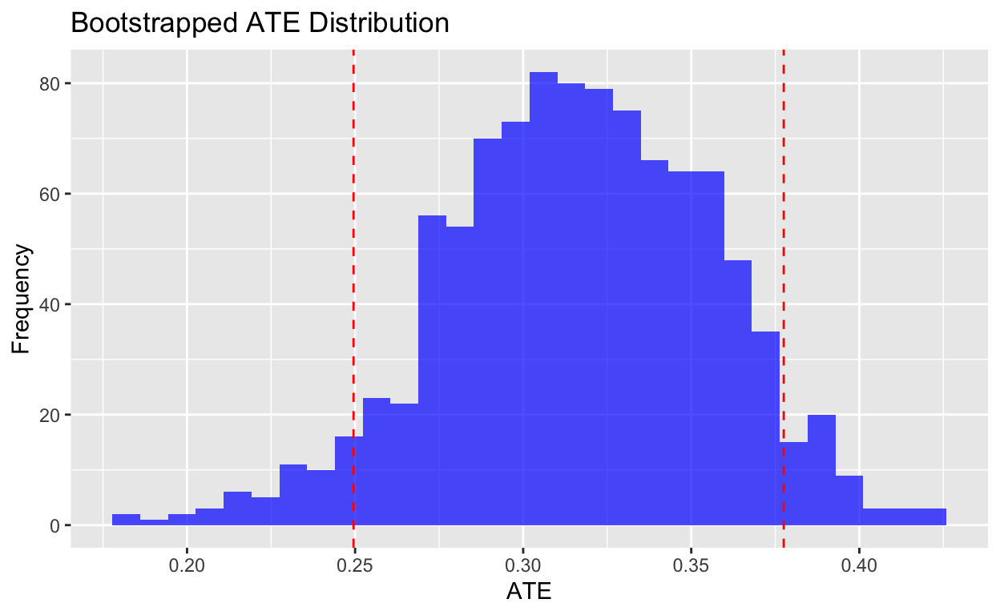
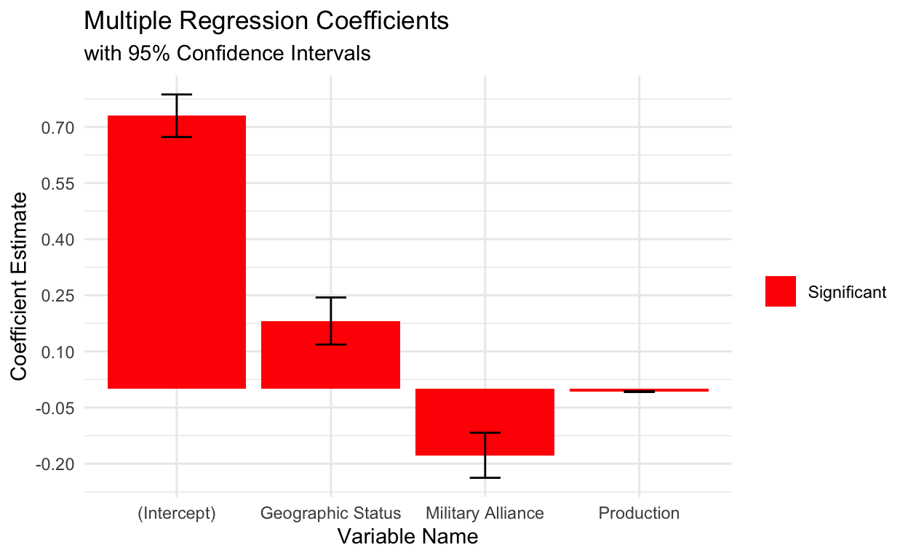

Introduction
What are the key relationships which structure European states’ dependency on Gazprom’s natural gas exports?
This study will unpack this question using a self-made ‘Gazprom Dependency’ dataset, which will facilitate an analysis of what kinds of variables influence the relationships Gazprom has with European states. Within this broad umbrella question, there are also a range of sub-questions which this project aims to confront; does reliance on Gazprom natural gas vary between FSU countries and non-FSU countries? Does reliance on Gazprom natural gas vary between NATO and non-NATO member states? How do changing domestic production levels drive the reliance relationship with Russia?
Studying Gazprom in close detail is an important research agenda, not least because energy has been the main denominator in European states’ (in)ability to respond to Russian aggressions in the 20th century. For instance, Stern’s (2005) ‘The Future of Russian Gas and Gazprom’ outlined almost two decades ago the importance of understanding energy dependency in Europe – and this certainly has a feeling of foresight given how events transpired ever since in 2014 and 2022. The research in this context is mainly interesting because of the diversity of variables available to analyse within the novel dataset and the broad temporal spectrum, with data ranging from 1991 to 2020. Overall, the primary aim of this study is to understand which political, economic, and militaristic factors underpin the different relationships European states have with Gazprom, and why these trends may have changed over time. In doing so, we might be able to better understand how European states can strive for increased energy independence in the future and divest themselves from Gazprom and the Russian state.
My null hypothesis, or H(0), is that domestic natural gas production levels, military alliances, and having former Soviet Union (FSU) status are not statistically significant factors structuring the relationship between Gazprom and client states (further discussion of significance levels to come). By posing this as a null hypothesis, if any one of these relationships are found to be statistically significant, we can reject the null hypothesis and conduct further analysis on causality. With regards to the relative significance of each variable, I would hypothesize that domestic natural gas production rates have the most statistically significant inverse relationship with Gazprom reliance. That is to say that as domestic natural gas production increases, I would predict some sort of proportional decrease in reliance on Gazprom.
Data Summary
I constructed the ‘Gazprom Reliance’ dataset from a variety of different publicly available sources. This dataset contains variables related to Gazprom’s energy diplomacy with 12 different European states, specifically in relation to natural gas. It combines data gleaned from Gazprom internal reporting, the International Energy Agency (IEA), the World Bank, US Energy Information Administration (EIA), and academic literature (Stern 2005). Ten different variables have been included in this dataset: year, country, production, Gazprom imports, natural gas reliance, total energy reliance, difference in reliance, geographic status, military alliance, and control of corruption. Given my research question, the dependent variables are ‘Gazprom_Imports’, ‘Natural_Gas_Reliance’,and ‘Total Reliance’. Though this dataframe does not exactly match any of the research design definitions, it is closest in nature to a time series with aspects of a ‘differences in differences’ design because 1) it measures change over time, 2) it is observational insofar that we are not controlling any of the changes, and 3) it measures difference across different kinds of ‘interventions’ (e.g.,NATO membership, corruption levels).
All the variables included in this dataset were measured in unique ways. Gazprom import data was sourced from Gazprom’s annual reports, and thus is largely survey-driven data. The other two dependant variables (natural gas reliance and total reliance) are from an IEA dataset which uses statistical modelling combining Total Energy Supply (TES), import data, and production data to output a percentage integer representing reliance on Russian fuel. The natural gas reliance variable denotes the reliance on Russian natural gas, whilst the total reliance variable denotes the reliance on all Russian fossil fuels (including oil and coal). Note that there are missing values, such as for reliance in Belarus where data was not available. It is also worth noting that Russian natural gas exports are equal to Gazprom exports, since Gazprom has monopoly control over the Russian natural gas export industry. With regards to some of the key independent variables, the control over corruption index is a statistical model run by The World Bank, and the natural gas production data is survey data sourced from the IEA. Please also note that when collating this dataset, I standardized all units for production and imports into billion cubic metres (bcm). A codebook for this dataset is available upon request!
Below is a summary of the dependant variables in this dataset.
## Firstly, I need to clean the dataset and make sure all variables are correct
gazprom_data <- read_csv("Gazprom_data.csv")
## There were some empty columns, so this is subsetting to the one's we want
gazprom_data <- subset(gazprom_data, select = c(Year, Country, Production,
Gazprom_Imports, Natural_Gas_Reliance, Total_Reliance, Difference_in_Reliance,
Geographic_Status, Military_Alliance, Control_of_Corruption))
## In this section I am converting the % variables into decimal integers
gazprom_data$Natural_Gas_Reliance <- as.numeric(sub("%", "",
gazprom_data$Natural_Gas_Reliance))/100
gazprom_data$Total_Reliance <- as.numeric(sub("%", "",
gazprom_data$Total_Reliance))/100
gazprom_data$Difference_in_Reliance <- as.numeric(sub("%", "",
gazprom_data$Difference_in_Reliance))/100## This is a summary plot for the dependent natural gas reliance variable
distinct_colors <- c("#1f78b4", "#33a02c", "#e31a1c", "#ff7f00", "#6a3d9a",
"#b15928", "#a6cee3", "#fdbf6f", "#ffed6f", "#fb9a99", "#cab2d6")
## I'm using distinct colour codes above to make sure the plot is clear
gas_reliance_plot <- ggplot(gazprom_data, aes(x = Year, y = Natural_Gas_Reliance,
group = Country, color = Country)) +
geom_line(data = gazprom_data[!is.na(gazprom_data$Natural_Gas_Reliance), ]) +
labs(title = "Reliance on Russian Natural Gas Over Time",
x = "Year",
y = "Natural Gas Reliance (%)",
color = "Country") +
scale_y_continuous(labels = scales::percent_format(scale = 100)) +
scale_color_manual(values = distinct_colors) +
theme_minimal()
print(gas_reliance_plot)
## This is a summary plot for the dependent Gazprom imports variable
distinct_colors <- c("#1f78b4", "#33a02c", "#e31a1c", "#ff7f00", "#6a3d9a",
"#b15928", "#a6cee3", "#fdbf6f", "#ffed6f", "#fb9a99", "#cab2d6", "#8dd3c7")
imports_plot <- ggplot(gazprom_data, aes(x = Year, y = Gazprom_Imports, group =
Country, color = Country)) +
geom_line(data = gazprom_data[!is.na(gazprom_data$Gazprom_Imports), ]) +
labs(title = "Gazprom Imports Over Time",
x = "Year",
y = "Gazprom Imports (bcm)",
color = "Country") +
scale_color_manual(values = distinct_colors) +
theme_minimal()
print(imports_plot)
## This is a summary plot for the dependent Total Reliance variable
distinct_colors <- c("#1f78b4", "#33a02c", "#e31a1c", "#ff7f00", "#6a3d9a",
"#b15928", "#a6cee3", "#fdbf6f", "#ffed6f", "#fb9a99")
total_reliance_plot <- ggplot(gazprom_data, aes(x = Year, y = Total_Reliance,
group = Country, color = Country)) +
geom_line(data = gazprom_data[!is.na(gazprom_data$Total_Reliance), ]) +
labs(title = "Total Reliance on Russian Fossil Fuels Over Time",
x = "Year",
y = "Total Reliance (%)",
color = "Country") +
scale_y_continuous(labels = scales::percent_format(scale = 100)) +
scale_color_manual(values = distinct_colors) +
theme_minimal()
print(total_reliance_plot)
Results
In this section of the study I now want to analyze the relationship between the dependant variables (reliance on Russian natural gas and total reliance) and many of the independent variabes, such as geographic status, corruption, and production levels. I aim to do by measuring Average Treatment Effect (ATE) where applicable for categorical variables, linear regression, and multiple regression. A lot of different relationships could be tested, but for brevity I will be looking at the effect of geographic status and corruption levels on Russian natural gas reliance.
Reliance on Russian natural gas - The Geographic Status Variable
For this variable, we can look at the ATE that geographic status has on natural gas reliance
# Let's start with Near Abroad countries
mean_near_abroad <- gazprom_data |>
filter(Geographic_Status == "Near Abroad") |>
summarise(near_abroad_treatment = mean(Natural_Gas_Reliance))
# Now we will look at Former Soviet Union (FSU) countries
mean_FSU <- gazprom_data |>
filter(Geographic_Status == "FSU") |>
summarise(FSU_treatment = mean(Natural_Gas_Reliance, na.rm = TRUE))
# Now we will look at the ATE
ATE <- mean_FSU$FSU_treatment - mean_near_abroad$near_abroad_treatment
geographic_means <- tibble(
Geographic_Status = c("FSU", "Near Abroad", "ATE"),
Treatment_Mean = c(mean_FSU$FSU_treatment,
mean_near_abroad$near_abroad_treatment, ATE))
geographic_means |> knitr::kable(digits = 2)| Geographic_Status | Treatment_Mean |
|---|---|
| FSU | 0.80 |
| Near Abroad | 0.48 |
| ATE | 0.32 |
Great, I now know that the average natural gas reliance for FSU countries from 1991-2020 is 80% (2 digits), whilst the average natural gas reliance for ‘Near Abroad’ countries in the same period was 48% (2 digits). This means that being in an FSU country has an ATE of 32 percentage points. Now let’s test if this has any statistical significance. I’m going to do so by generating 1,000 bootstrap replications to then calculate a 90% confidence interval to see if we can reject the null hypothesis.
In this case, the null is that there is no pronounced effect of being an FSU country on mean reliance on Russian natural gas from 1991-2020 (ATE = 0).
library(infer)
set.seed(02138)
# I am going to bootstrap seperately as one variable is numeric and the other dbl
geographic_boot_near_abroad <- gazprom_data |>
filter(Geographic_Status == "Near Abroad") |>
specify(response = Natural_Gas_Reliance) |>
generate(reps = 1000, type = "bootstrap") |>
calculate(stat = "mean")
geographic_boot_FSU <- gazprom_data |>
filter(Geographic_Status == "FSU") |>
filter(!is.na(Natural_Gas_Reliance)) |>
specify(response = Natural_Gas_Reliance) |>
generate(reps = 1000, type = "bootstrap") |>
calculate(stat = "mean")
# Calculate all the different ATEs from bootstrapped means
geographic_boot_ATE <- geographic_boot_FSU$stat - geographic_boot_near_abroad$stat
# Now work out the CI based on this
geographic_ci_90 <- tibble(
lower_interval = quantile(geographic_boot_ATE, 0.05),
upper_interval = quantile(geographic_boot_ATE, 0.95)
)
geographic_ci_90 |> knitr::kable(digits = 2)| lower_interval | upper_interval |
|---|---|
| 0.25 | 0.38 |
Summary Plot
geog_boot_ATE_plot <- ggplot() +
geom_histogram(aes(x = geographic_boot_ATE), fill = "blue", bins = 30, alpha = 0.7) +
geom_vline(xintercept = geographic_ci_90$lower_interval, linetype = "dashed",
color = "red") +
geom_vline(xintercept = geographic_ci_90$upper_interval, linetype = "dashed",
color = "red") +
labs(title = "Bootstrapped ATE Distribution", x = "ATE", y = "Frequency")
print(geog_boot_ATE_plot)
Here we can see that our confidence interval is [0.25, 0.38]. Given this CI, which does not include 0 - the null hypothesis value - we can infer that the observed difference in mean natural gas reliance between FSU and Near Abroad countries may be statistically significant. In better scientific terms, though, we have information here to reject the null hypothesis at a 90% significance level. In other words, the observed difference in means (point estimate) falls within a range of values that is statistically unlikely to occur if the null hypothesis were true.
Putting this into a social science context, we can infer from this analysis that Former Soviet Union countries from this dataset (Estonia, Lithuania, Ukraine, Belarus) are significantly more reliant on Russian natural gas than other nearby European states from 1991-2020. This is an interesting result, as it tells us that despite the dissolution of the USSR in 1991, the Russian Federation still exercises a strong degree of control through Gazprom over it’s former satellites. This is even more so interesting in the context of the Russian invasions of Ukraine, both in 2014 and 2022, and the spectrum of condoning to condemnation seen across Europe. Clearly there is still some kind of post-Soviet hangover which does not allow FSU states the same degree of energy autonomy as Near Abroad states have.
Reliance on Russian Natural Gas - The Production Variable
For this variable, we can conduct a simple linear regression to look at the relationship between natural gas production over time and reliance on Russian natural gas exports. In this case the independent variable is production. Let’s look at the regression with an alpha value of 0.05.
simpregression <- lm(Natural_Gas_Reliance ~ Production, data = gazprom_data)
varnames <- names(coefficients(simpregression))
modelsummary::modelsummary(simpregression, statistic = "p.value",
gof_map = c("nobs", "r.squared", "adj.r.squared"),
coef_map = setNames(varnames, varnames))| (1) | |
|---|---|
| (Intercept) | 0.664 |
| (<0.001) | |
| Production | −0.008 |
| (<0.001) | |
| Num.Obs. | 321 |
| R2 | 0.378 |
| R2 Adj. | 0.376 |
The estimated intercept is 0.664, and the p-value associated with the intercept is less than 0.001. The intercept represents the expected value of reliance on Russian natural gas when the domestic production is zero, which means that when domestic production is zero, reliance on Russian natural gas can be expected to be 66.4%.
The coefficient for production is -0.008, and the p-value is less than 0.001. The negative coefficient suggests that there is a very slight negative relationship between production levels and reliance on Russian natural gas. As production increases, reliance on Russian natural gas tends to decrease ever so slightly. This means that as production increases by 1 billion cubic metres, we can expect the reliance on Russian natural gas to fall by 0.008 percentage points. Despite the negative relationship being extremely minimal (almost inconsequential), the low p-value indicates that this relationship is statistically significant.
Due to the nature of this data design as a time-series, I would still hesitate to attribute this small relationship causally given that the relationship could be confounded by other temporal trends between 1991-2020, such as macroeconomic shocks (e.g., 2008), corruption, and changing military alliances, as well as the fact that this dataset consists of observational data which we are not in direct control of.
In the context of the regression, where the dependent variable is Natural Gas Reliance and the independent variable is Production, an adjusted R squared value of 0.376 indicates that approximately 37.6% of the variability in Natural Gas Reliance can be explained by the variation in Production. While adjusted R squared is a measure of the goodness of fit, it does not imply causation. Even though my model explains a substantial portion of the variability, it doesn’t provide evidence of a causal relationship between Production and Natural Gas Reliance. Importantly, the remaining 62.4% of the variability in Natural Gas Reliance is unexplained by the model.
Potential Confounders - Multiple Regression
In order to determine some possible confounders, and to also re-examine our previous relationship of geographic status with natural gas reliance, we can produce a multiple regression which looks at other independent variables, such as corruption, military alliances, and geographic status. In order to do so, I first need to make military alliances and geographic status into ‘dummy’ binary variables.
# Creating a binary indicator variable for NATO (1 for NATO, 0 for non-NATO)
gazprom_data <- gazprom_data |>
mutate(military_ind = if_else(Military_Alliance == "NATO", 1, 0))
# Creating a binary indicator variable for FSU (1 for FSU, 0 for Near Abroad)
gazprom_data <- gazprom_data |>
mutate(geographic_ind = if_else(Geographic_Status == "FSU", 1, 0))
head(gazprom_data)# A tibble: 6 × 12
Year Country Production Gazprom_Imports Natural_Gas_Reliance
<dbl> <chr> <dbl> <dbl> <dbl>
1 1991 Poland 3.5 7.1 0.69
2 1992 Poland 3.39 6.7 0.69
3 1993 Poland 4.33 5.8 0.57
4 1994 Poland 4.1 6.2 0.6
5 1995 Poland 4.19 7.2 0.64
6 1996 Poland 4.15 7.1 0.61
# ℹ 7 more variables: Total_Reliance <dbl>,
# Difference_in_Reliance <dbl>, Geographic_Status <chr>,
# Military_Alliance <chr>, Control_of_Corruption <dbl>,
# military_ind <dbl>, geographic_ind <dbl>Now we can jump into the multiple regression:
multiregression <- lm(Natural_Gas_Reliance ~ Production + military_ind +
geographic_ind, data = gazprom_data)
varnames2 <- c("(Intercept)" = "Intercept",
"Natural_Gas_Reliance" = "Reliance on Russian Natural Gas",
"military_ind" = "Military Alliance",
"geographic_ind" = "Geographic Status",
"Production" = "Production")
modelsummary::modelsummary(multiregression, statistic = "p.value",
gof_map = c("nobs", "r.squared", "adj.r.squared"),
coef_map = varnames2)| (1) | |
|---|---|
| Intercept | 0.730 |
| (<0.001) | |
| Military Alliance | −0.177 |
| (<0.001) | |
| Geographic Status | 0.181 |
| (<0.001) | |
| Production | −0.007 |
| (<0.001) | |
| Num.Obs. | 321 |
| R2 | 0.527 |
| R2 Adj. | 0.523 |
The intercept of 0.730 is the estimated value of Natural Gas Reliance when all other predictors are held at zero. In this context, it represents the baseline level of reliance when all other variables are not considered.
Beginning with Military Alliances, the coefficent of -0.177 means that, when
holding other variables constant, a one-unit increase in the military_ind
variable (switching from 0 to 1, indicating NATO membership) is associated with
a decrease of 0.177 percentage points in Natural Gas Reliance. This is an
interesting result because it suggests that countries in a military alliance
with NATO tend to have lower reliance on Russian natural gas, and more
specifically, that countries which join NATO see a 17.7% percentage point
decrease in their reliance on Russian natural gas.
Now moving to Geographic Status, the coefficent of 0.181 means that, when
holding other variables constant, a one-unit increase in the geographic_ind
variable (switching from 0 to 1, indicating FSU countries) is associated with an
increase of 0.181 percentage points in Natural Gas Reliance. This suggests that
countries in the FSU region tend to have higher reliance on Russian natural gas
by 18.1 percentage points, and corroborates my previous findings from the ATE
bootstrap analysis, especially since this is also statistically significant
(p < 0.001).
The change in the coefficient for the Production variable from -0.008 to
-0.007 between the two regressions indicates a slight adjustment in the
estimated relationship between Production and Natural Gas Reliance when
additional variables (Military Alliance and Geographic Status) are included
in the model. This suggests that, after accounting for the influence of military
alliance and geographic status, the estimated effect of a one-unit increase in
production on Natural_Gas_Reliance is now slightly smaller.
Summary Plot
multiregression_summary <- broom::tidy(multiregression)
ggplot(multiregression_summary, aes(x = term, y = estimate, fill =
ifelse(p.value < 0.05, "Significant",
"Not Significant"))) +
geom_bar(stat = "identity", position = "dodge") +
geom_errorbar(aes(ymin = estimate - 1.96 * std.error, ymax = estimate + 1.96
* std.error), position = position_dodge(width = 0.8), width
= 0.2) + #1.96 is a 95% CI on a normal distribution curve
labs(title = "Multiple Regression Coefficients",
subtitle = "with 95% Confidence Intervals",
x = "Variable Name",
y = "Coefficient Estimate") +
scale_fill_manual(values = c("Significant" = "red", "Not Significant" =
"gray")) +
theme_minimal() +
theme(legend.title = element_blank()) +
scale_x_discrete(labels = c("Intercept" = "(Intercept)",
"geographic_ind" = "Geographic Status",
"military_ind" = "Military Alliance",
"Production" = "Production")) +
scale_y_continuous(breaks = seq(-0.5, 1, by = 0.15))
Conclusion
By way of conclusion, it is clear that there are statistically significant relationships between European states’ reliance on Russian natural gas and their military alliances, historical-geographic status, and domestic production levels of natural gas. Whilst all relationships were significant at the 0.05 alpha level, geographic status seems to be the most important variable under consideration structuring these relationships. Not only did it have the highest coefficent in the multiple regression model (0.181), but it was also found that being an FSU country has a statistically significant average treatment effect on Russian natural gas reliance in comparison to Near Abroad nations after bootstrapping. This, I argue, runs against the grain of my initial hypothesis which speculated that domestic gas production levels would be the most significant factor influencing reliance on Russian natural gas. In fact, out of all the variables under the microscope it turned out to have the weakest relationship (-0.007 in multiple regression) - though it was still significant. In spite of these conclusions, it is important to be aware of some limitations. Firstly, we have the obvious problem of missing data, which is exacerbated during the immediate post-Cold War years, and even more so for some FSU states where data was not transparently recorded (such as Belarus). It is always challenging establishing causality from data, but there are some potential confounders which were not explored in depth in this study, such as policy shifts, geopolitical changes (such as Gazprom’s gas dispute with Ukraine in 2008-9), and so on. It might be the case that some long-term relationships or short-term fluctuations cannot be explained by the variables in this dataset. A future study on this topic would greatly benefit from additional data on FSU countries, and given more scope, it would be interesting to do a sensitivity analysis for different time periods rather than generalizing trends from 1991-2020.
Reference List
Original dataset, available upon request. The codebook can be found at: https://acrobat.adobe.com/link/review?uri=urn:aaid:scds:US:4cbc5959-7089-3fef-bc1b-c67d906f8d69
Stern, Jonathan P. 2005. The Future of Russian Gas and Gazprom. New York: Oxford University Press.
```{.r .distill-force-highlighting-css}